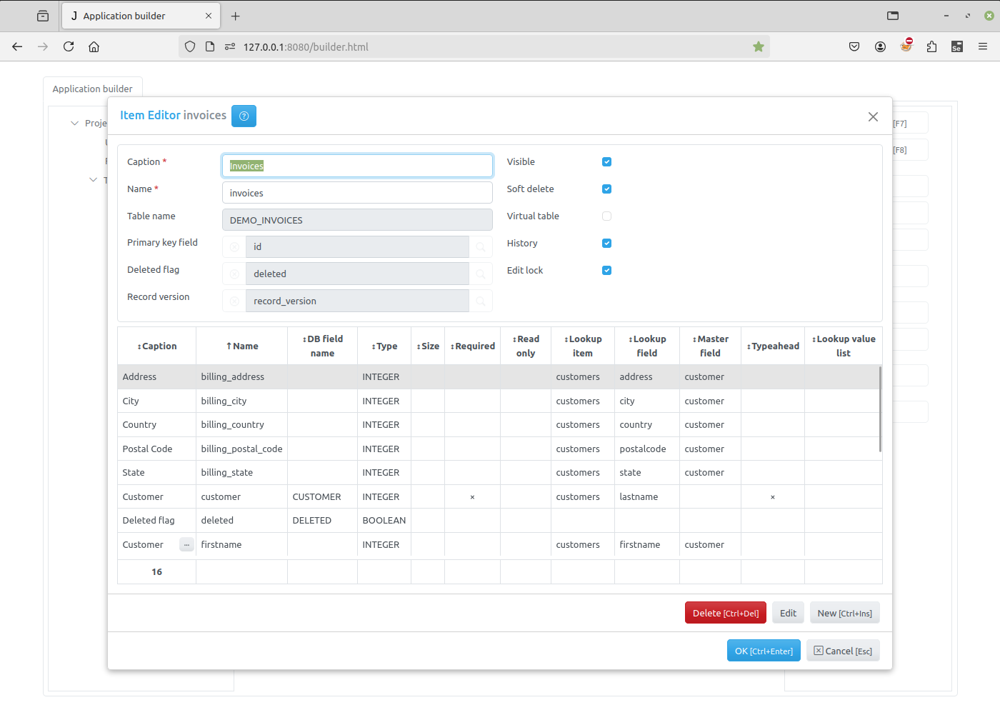

Item Editor Dialog¶
Item Editor dialog opens when a developer selects a Group node in the project tree of the Application builder and click on the New or Edit button to create a new item or modify a selected one. See Items.
The upper part of the Item Editor dialog have the following fields:
Caption - the item name that appears to users.
Name - the name of the item that will be used in programming code to get access to the item object. It should be unique in the project and should be a valid python identifier.
Table - the name of the table that will be created in the project database. This name is specified when creating an item, and can not be changed later.
Primary key field - by clicking on the button to the right of this attribute you can specify the primary key field for the item. If the primary key field was defined for the group that owns the item it will be displayed there by default, otherwise you have to create this field first.
Deleted flag field - by clicking on the button to the right of this attribute you can specify the field that will serve as a deleted flag for the item. If the deleted flag field was defined for the group that owns the item it will be displayed there by default, otherwise you have to create this field first.
Visible - use this checkbox to set item’s visible attribute. The value of this attribute can be used in code on the client to create menu items and so on.
Soft delete - when this check-box is checked, the delete method does not erase a record physically from the table, but uses this field to mark the record as deleted. See Common fields, delete method (server), delete method (client).
Virtual table - if this checkbox is checked, no database table will be created. Use this options to create an item with in-memory dataset or to use its modules to write code. This checkbox must be set when creating an item and can not be changed later.
History - if this checkbox is checked, the application will saving for this item audit trail/change history made by users, see Saving audit trail/change history made by users
Edit lock - if this checkbox is checked, the application will use record locking while users concurrently edit a record, see Record locking
In the center part of the Item Editor dialog there is a table containing a list of fields, defined for the item. To add, modify or delete a field use the following buttons:
New - click this button to invoke the Field Editor Dialog to create a new field.
Edit - click this button to invoke the Field Editor Dialog to modify a selected field.
Delete - click this button to delete a field selected in in the field list.
In the bottom-right corner of the Dialog form there are two buttons:
OK - click this button to save change you made. If the Virtual table checkbox is not checked and DB manual update parameter in the project Database Dialog is not set, the application will generate and execute SQL query to update the item table in the project Database (changes made to the fields will be applied to the table).
Cancel - click this buttons to cancel the operation.